1
Click Curated or My layout
At the top right, Curated and My layout switch between the standard dashboard and the one you arranged yourself.
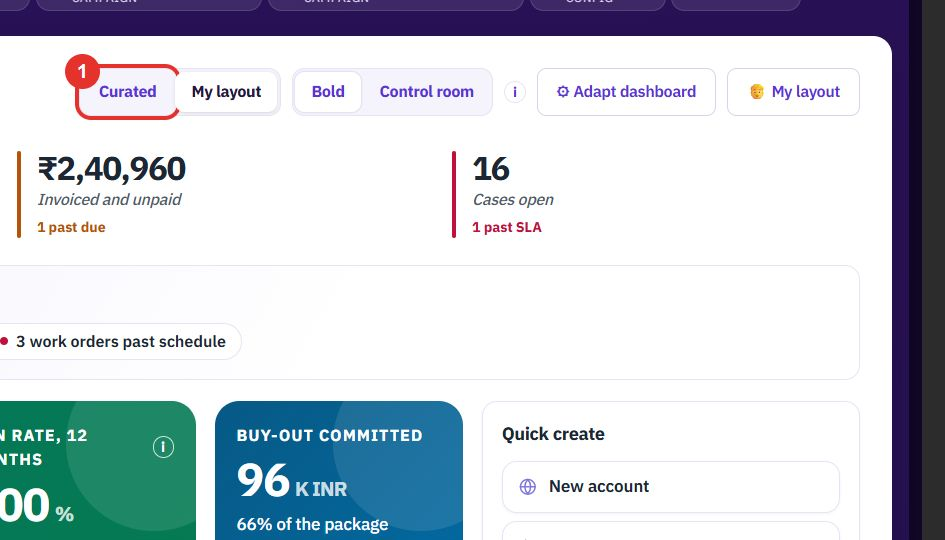
The dashboard is the first screen after you sign in: the numbers, what needs you today, and quick ways to create records. The Assistant answers questions about your data from any screen.
Want the full chapter? Solution Guide, chapter 6: Platform and master data (PDF) · All documentation
Do this at the start of the day to see what needs you.
At the top right, Curated and My layout switch between the standard dashboard and the one you arranged yourself.

Bold and Control room are two looks for the same dashboard. The “i” icon next to them explains the difference.
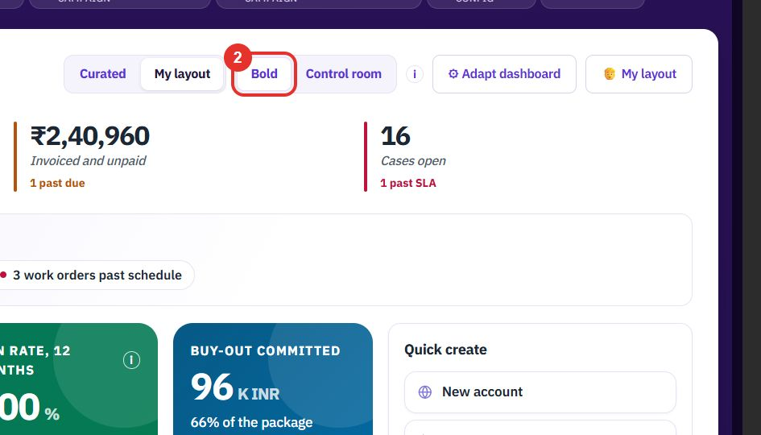
The line under the figures lists what needs attention today, for example quotes past validity, an overdue invoice or work orders past schedule. Each one is a chip you can click.
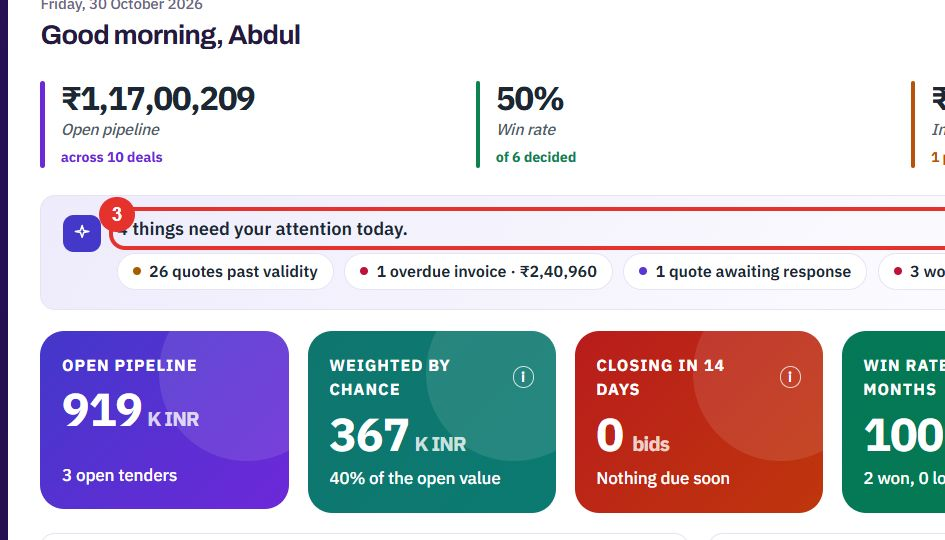
Each coloured tile is one figure, such as OPEN PIPELINE. A tile with an “i” icon explains how the figure is worked out.
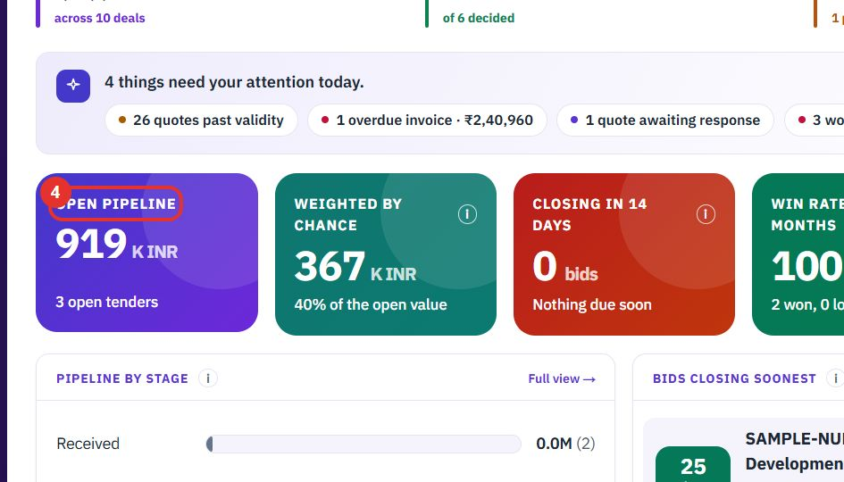
Quick create starts a new record in one click: New account, New case, New contact, New quotation and New asset.
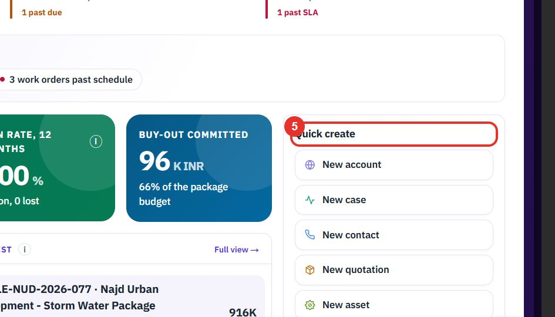
Further down you find charts and lists, each with a Full view → link, and cards such as BUSINESS NEWS, TECHNICIANS, ACCOUNTS and the workforce cards. Which ones you see depends on the modules your workspace uses.
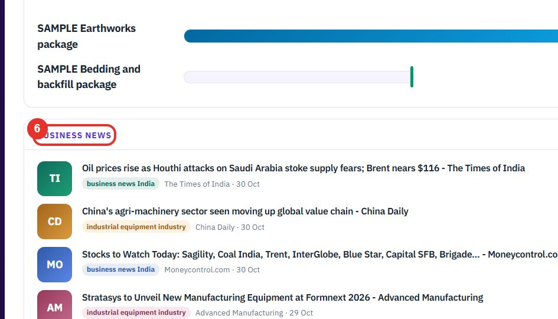
Do this to show the cards you use, hide the rest and choose how wide each one is.
Click Adapt dashboard at the top right. A panel opens on the right.
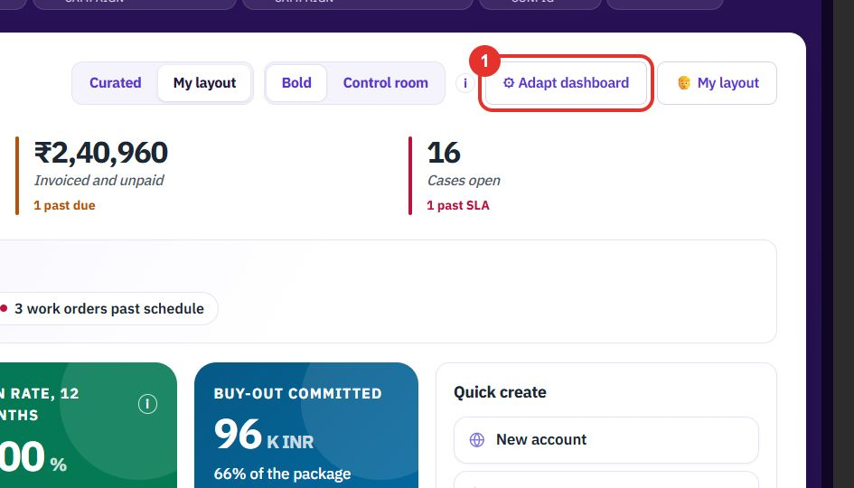
Under QUICK ADD, click a chip such as + Accounts, + Cases, + Leads or + Tenders to add that module’s cards.
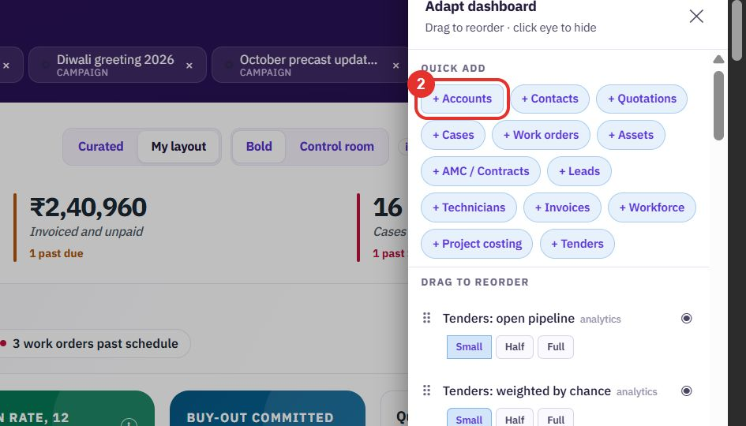
Under DRAG TO REORDER, drag a row by its dotted handle to move the card up or down on the dashboard.
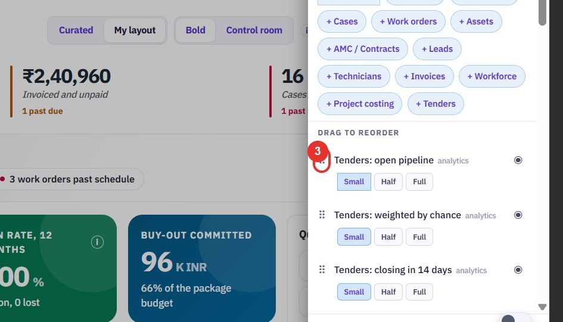
Click the eye on a row to hide that card. A crossed-out eye means it is hidden.
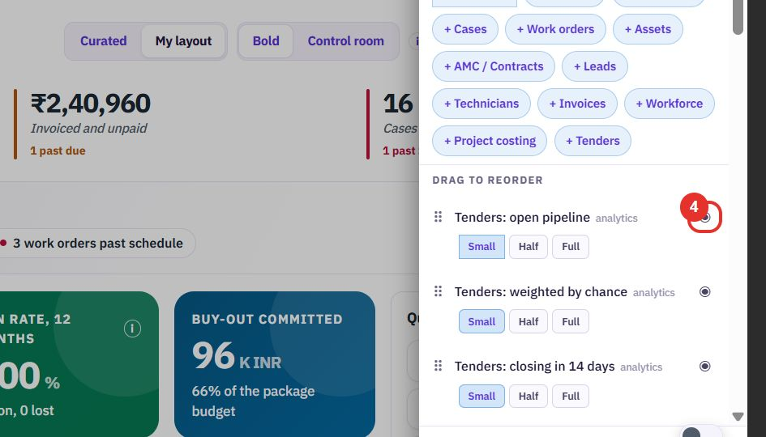
Under each card name, pick how wide the card is.
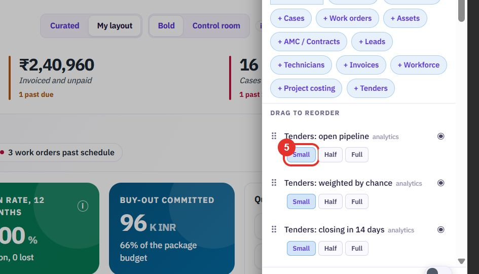
The panel says Changes saved automatically, so there is no save button. Close the panel with the cross at its top right.
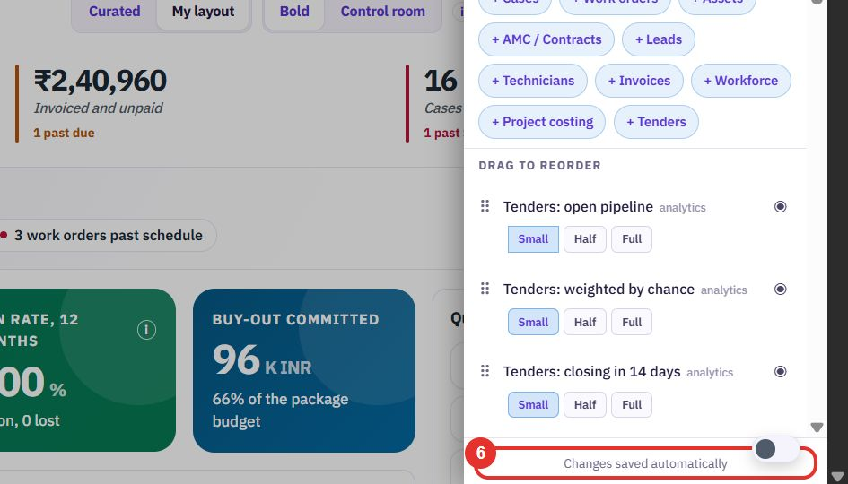
Do this to ask a question about your data, or to be taken to a screen, in plain words.
The round button at the bottom right opens the Assistant. The small switch above it turns the Assistant on or off on this device.
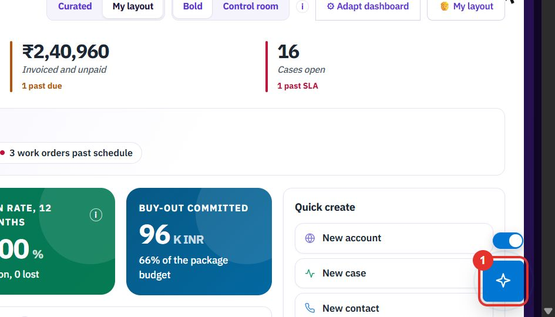
The panel shows how much of your AI allowance has been used. New chat starts a fresh conversation, and the “i” icons explain the Assistant and the usage figure.
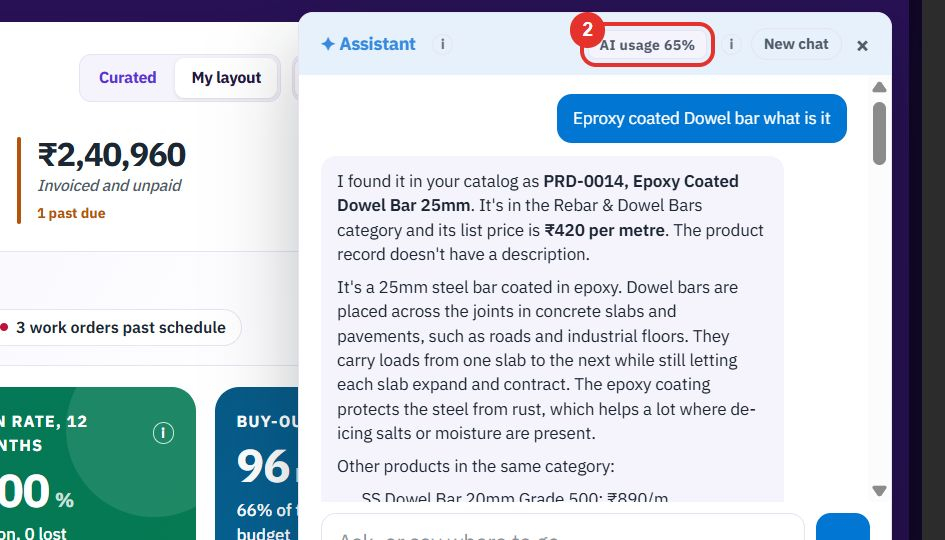
Click the box at the bottom that says Ask, or say where to go… and type, for example, What is open in my pipeline?
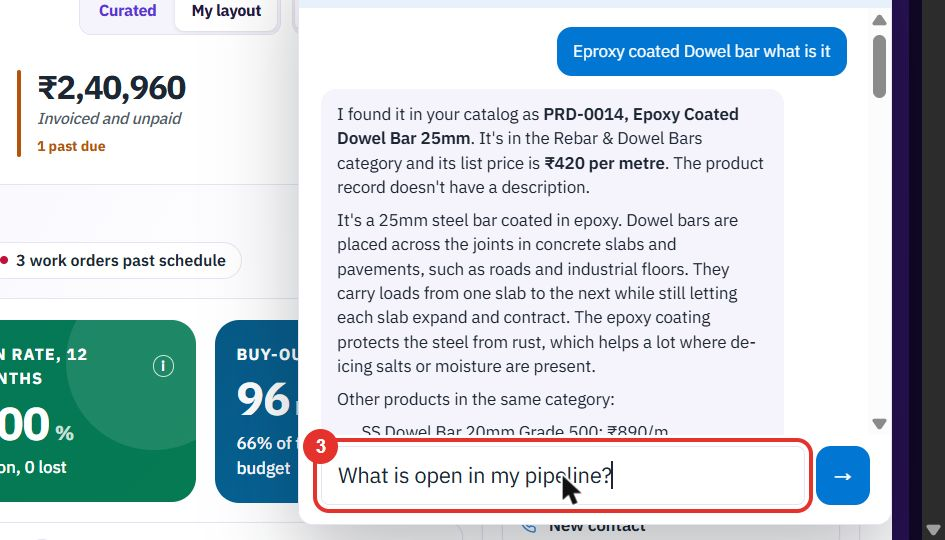
Click the arrow button, or press Enter.
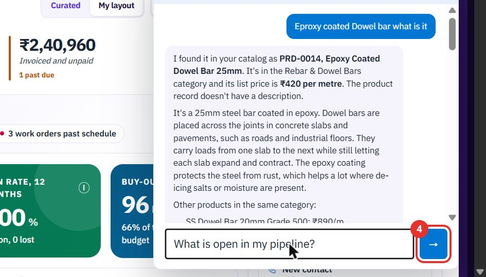
The answer appears under your question. This one lists the open deals with their stage and value, and points out that three have close dates that have already passed. Links in an answer open the record.
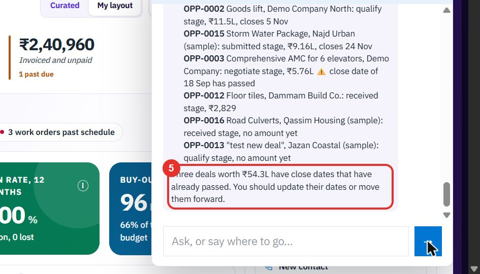
Twenty minutes on a live workspace, with your files and your team.